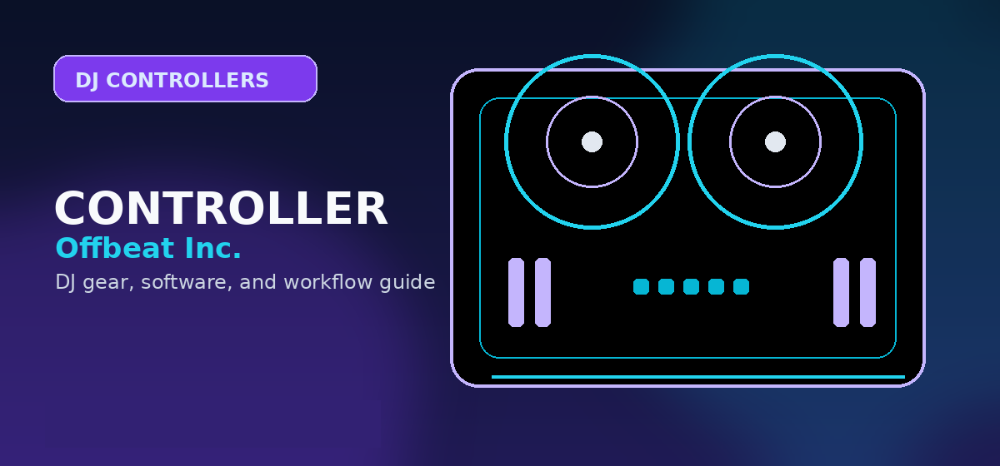

DJ Controllers Hub
A topic-first controller buying hub that routes beginners, Serato users, rekordbox users, mobile DJs, and standalone-system buyers into the right Offbeat controller page.

A topic-first controller buying hub that routes beginners, Serato users, rekordbox users, mobile DJs, and standalone-system buyers into the right Offbeat controller page.
Use this hub as the controller decision tree
Do not start by asking which controller is “best.” Start by asking which workflow the buyer is actually entering: laptop controller, standalone system, scratch/motorized workflow, mobile gig rig, or inexpensive beginner practice setup. That choice determines software, outputs, upgrade path, and affiliate merchant priority.
Best DJ Controllers for Beginners
Start here for FLX2, FLX4, Inpulse, and entry-level decisions.
Open →OverallBest DJ Controllers
The broad commercial parent for readers comparing across price tiers.
Open →Price ladderBest Under $1,000
The missing bridge between budget gear and professional systems.
Open →No laptopBest Standalone DJ Systems
Prime 4+, XDJ-AZ, OMNIS-DUO, Mixstream, and mobile standalone paths.
Open →Software-specificBest for Serato
Serato-first controllers for scratch, stems, open-format, and club prep.
Open →Software-specificBest for rekordbox
rekordbox controllers for beginners, CDJ prep, and AlphaTheta workflows.
Open →Choose the right controller category
| Buyer goal | Recommended guide | Buyer takeaway | Avoid comparing it with |
|---|---|---|---|
| Absolute beginner | Beginner controllers | Simple two-channel controllers with a real upgrade path. | Flagship standalone systems and pro club players. |
| Budget search | Under $200, under $300, under $500, under $1,000 | Price-banded choices with clear compromises. | General “best overall” claims. |
| Software ecosystem | Serato and rekordbox | Hardware that unlocks the buyer’s chosen software workflow. | Controllers that require awkward mappings or mismatched licensing. |
| No laptop | Standalone systems | Integrated screens, USB/SD/library workflows, streaming, and pro outputs. | Cheap controllers that still require a laptop. |
| Scratch / vinyl feel | Motorized controllers | RANE ONE-style platter feel, battle layouts, and Serato performance features. | Casual beginner gear without motorized platters. |
Best buying path by controller type
How to use this hub
Use this hub to compare the main controller categories first, then narrow the choice by software, budget, and performance style.
Priority controller pages
Practical checklist before you decide
Use this page as one part of the decision, not the whole decision. Confirm the current price, software compatibility, operating-system support, and whether the option still fits the way you actually practice or perform.
- Fit: choose the option that matches your current workflow and the setup you expect to use for the next year.
- Compatibility: verify exact hardware, app, subscription, and file-format requirements before buying or switching.
- Reliability: avoid workflows that depend on one fragile adapter, one unstable app version, or an internet connection with no backup.
- Upgrade path: favor tools that can grow with you instead of forcing another purchase as soon as you start recording mixes or playing longer sets.
How to use this guide in a real DJ setup
Before changing gear, software, or workflow, connect the recommendation to an actual use case: home practice, recorded mixes, streaming, mobile events, club preparation, or production crossover. A choice that looks best on paper can still be wrong if it adds setup friction or does not match the way you will play.
The safest workflow is to test the setup exactly as you will use it, then document the cable path, software version, library source, and backup plan. That prevents most of the avoidable failures that happen when DJs buy the right-looking tool but never validate the whole system.
How to use this controller hub
Do not start with the most expensive controller. Start with the category that matches your real use: beginner practice, budget buying, Serato performance, rekordbox club prep, standalone sets, or motorized platter feel. Then compare two or three realistic options inside that category.
Frequently Asked Questions
What is the best page to link a controller review to?
Link every controller review to this Controller Hub first, then to the most relevant category page such as beginner, Serato, rekordbox, standalone, or motorized controllers.
Should price pages and software-specific pages both exist?
Yes. Price pages satisfy budget intent; software-specific pages satisfy ecosystem intent. They should connect but not compete for the same keyword.
What should I check before buying this DJ controller?
Confirm software compatibility, audio outputs, headphone cueing, driver support, and whether the controller fits your real practice or gig setup.
Is this controller category good for beginners?
It can be, but beginners should prioritize reliable software support, simple routing, and controls that teach transferable DJ habits before paying for advanced performance features.
Should I buy new or used?
Buy used only when the seller can confirm working jog wheels, faders, outputs, USB connection, and included software/license status. Otherwise, new gear is safer for first-time buyers.